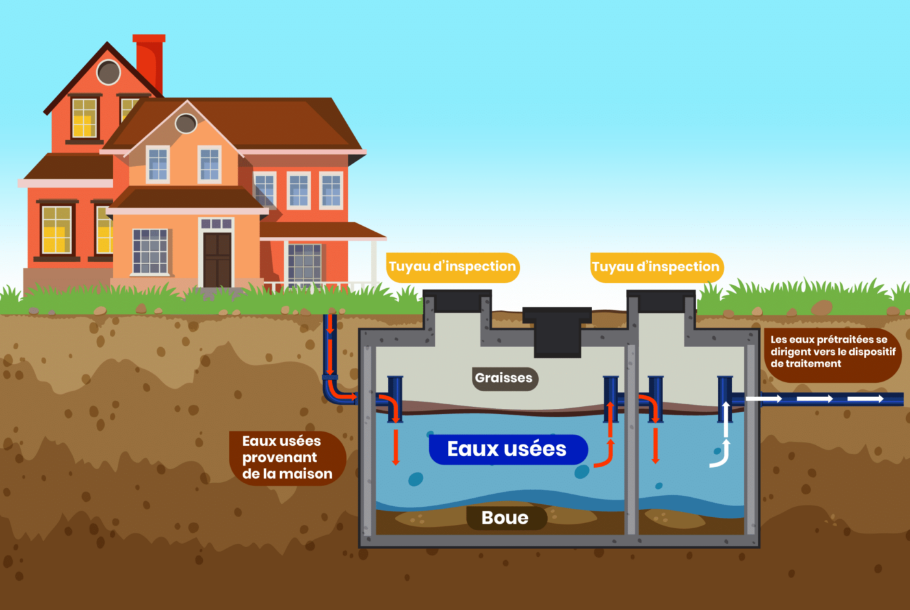
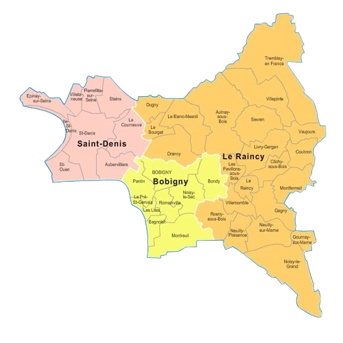

Installation Fosse septique : Faites installer votre fosse septique par nos experts. Nous garantissons une installation conforme et durable, adaptée à vos besoins, pour un traitement optimal des eaux usées et le respect des normes environnementales.
Contactez - Nous
NOS SERVICES
Mise en conformité : Assurez la conformité de votre système d'assainissement grâce à notre service spécialisé. Nos experts mettent à jour et adaptent vos installations aux normes en vigueur, garantissant un fonctionnement optimal et sécurisé.

Canalisations : Confiez l'installation ou la réparation de vos canalisations à nos experts. Nous effectuons la mise en place et la réparation rapide de vos systèmes d'évacuation, garantissant un écoulement fluide et durable.

Débouchage canalisations : Éliminez tous les blocages de vos canalisations grâce à notre service spécialisé de débouchage. Rapides, efficaces et équipés des meilleures technologies, nous intervenons pour restaurer un écoulement optimal et prévenir tout nouvel engorgement.
Nettoyage canalisations : Prenez soin de vos canalisations avec notre service de curage en profondeur. Un entretien régulier garantit la prévention des blocages et des désagréments liés aux dysfonctionnements. Faites appel à nos experts pour maintenir la performance et la durabilité de votre système d'assainissement.


Camera canalisations : Explorez vos installations sous un nouvel angle grâce à notre service d'inspection par caméra. Alliant expertise technique et précision, nous vous fournissons une analyse claire et détaillée de l'état intérieur de vos canalisations pour un diagnostic fiable.
Vidange : Grâce à notre expertise en pompage de fosses septiques, bacs à graisse et traitement des eaux usées, nous mettons à votre disposition des solutions complètes pour garantir l'entretien optimal et le bon fonctionnement de vos installations.


Pompe de relevage : Améliorez la gestion de vos eaux usées grâce à notre service de pompe de relevage haute performance. Que ce soit pour les eaux usées domestiques ou industrielles, notre équipe d'experts assure un contrôle optimal avec nos pompes de relevage de qualité supérieure.
Urgence : Face à l'urgence, notre équipe d'experts en assainissement est là pour intervenir rapidement. Qu'il s'agisse d'un débouchage urgent, d'une inspection par caméra ou d'une autre intervention, nous mettons tout en œuvre pour résoudre vos problèmes d'assainissement dans les plus brefs délais.

MISE EN CONFORMITE
Assurez la conformité de votre système d'assainissement grâce à notre service spécialisé. Nos experts mettent à jour et adaptent vos installations aux normes en vigueur, garantissant un fonctionnement optimal et sécurisé.
INSTALLATION FOSSE
Faites installer votre fosse septique par nos experts. Nous garantissons une installation conforme et durable, adaptée à vos besoins, pour un traitement optimal des eaux usées et le respect des normes environnementales.
CANALISATIONS
Confiez l'installation ou la réparation de vos canalisations à nos experts. Nous effectuons la mise en place et la réparation rapide de vos systèmes d'évacuation, garantissant un écoulement fluide et durable.
DEBOUCHAGE
Dégorgez vos canalisations en toute simplicité grâce à notre service spécialisé. Nous utilisons notre expertise pour éliminer rapidement les obstructions et rétablir un écoulement fluide et sans traces.
CURAGE CANALISATION
Assurez un entretien de qualité à vos canalisations avec notre service de curage. Nous éliminons efficacement les dépôts et résidus pour éviter les bouchons et garantir le bon fonctionnement de vos installations.
INSPECTION CAMÉRA
Découvrez l'état de vos canalisations grâce à notre service d'inspection par caméra. Nous vous offrons une analyse précise et détaillée pour une gestion efficace de vos installations.
POMPAGE
Grâce à notre savoir-faire en pompage de fosses septiques, bacs à graisse et traitement des eaux usées, nous garantissons la propreté et le bon fonctionnement de vos installations.
POMPE DE RELEVAGE
Améliorez l'évacuation de vos eaux usées avec notre service de pompe de relevage. Des solutions fiables pour le domestique comme pour l'industriel.
URGENCE
Pour toute urgence, notre équipe d'assainissement intervient rapidement afin de répondre à vos besoins : débouchage, inspection par caméra et autres services indispensables.
UNE EQUIPE PROFESSIONNELLE ET DES EQUIPEMENTS MODERNES
Au cœur de notre approche en assainissement, une équipe d'experts dédiée et des équipements modernes de pointe garantissent des solutions efficaces et durables. Chacun de nos professionnels contribue à l'excellence de nos services, tandis que nos technologies innovantes assurent des opérations optimales. Que ce soit pour la gestion des eaux usées, la prévention des risques environnementaux ou des systèmes de drainage sophistiqués, notre alliance entre professionnalisme et équipements modernes répond à tous vos besoins en assainissement.
NOS TARIFS
ATTRACTIFS
Profitez de nos services d'assainissement de haute qualité à des prix compétitifs. Nous nous engageons à vous fournir des solutions efficaces tout en respectant votre budget. Contactez-nous pour découvrir nos tarifs avantageux et bénéficier d'un service fiable et professionnel.
DEVIS GRATUITPOURQUOI CHOISIR 3DM BAT POUR VOS TRAVAUX DANS LA SEINE-SAINT-DENIS ?
Optez pour Assainissement 93 pour vos travaux d'assainissement en Île-de-France et profitez de notre savoir-faire de qualité. Nous nous distinguons par notre engagement constant envers la fiabilité, la qualité et la satisfaction de nos clients. Forts de nombreuses années d'expérience, nous avons bâti une solide réputation grâce à notre équipe d'experts passionnés Chez Assainissement 93, chaque projet est pris en charge avec soin et professionnalisme, du début à la fin.
NOS CONTRATS VOUS LIBÈRENT DE TOUS SOUCIS

CONTRAT PONCTUELS
CONTRAT ANNUELS
Avec nos contrats d'assainissement personnalisés, vous pouvez travailler en toute sérénité. Chez 3DM BAT, nous savons à quel point il est important de garantir la tranquillité d'esprit de nos clients. Nos contrats sont conçus pour offrir une transparence totale, en précisant chaque étape, les délais et les coûts liés à vos travaux, qu'ils soient ponctuels ou annuels. Nous nous engageons à vous fournir un service fiable, de qualité et sans surprise.
ZONE D'INTERVENTION ASSAINISSEMENT 93
3DM BAT assainissement 93 se déplace en urgence ou sur simple rendez-vous dans tout la Seine-Saint-Denis et dans tous les départements limitrophes. Vous pouvez nous contacter au 01 69 52 00 23 ou via notre formulaire de devis. Nous veillons à vous répondre dans les meilleurs délais. Saint-Denis - Montreuil - Aulnay - Drancy - Noisy - Pantin - Bondy - Epinay - Blanc-Mesnil - Bobigny - Rosny - Clichy - Stains - La Courneuve - Sevran - Tremblay - Villepinte - Livry-Gargan - Bagnolet - Saint-Ouen - Gagny - Villemomble - Les Lilas - Romainville - Le Pré-Saint-Gervais - Neuilly-sur-Marne - Neuilly-Plaisance - Pierrefitte - Villetaneuse - Dugny - Vaujours - Coubron
L’ENTREPRISE D’ASSAINISSEMENT QUI VOUS SIMPLIFIE LA VIE
3DM BAT Assainissement 93, expert en assainissement en Seine-Saint-Denis depuis plus de 20 ans, intervient auprès des particuliers comme des professionnels pour résoudre toutes vos urgences. Que ce soit des canalisations bouchées, des équipements sanitaires défectueux ou des problèmes d' odeurs, nous sommes toujours prêts à réagir rapidement, quelle que soit la situation.
En cas de proximité avec un égout public, nous contrôlons l'évacuation des eaux usées en les acheminant jusqu'au raccordement collectif en bordure de votre propriété. Si l'option d'égout public n'est pas disponible, nous installons un système complet de traitement des eaux usées, comprenant un réservoir et une solution de filtration, garantissant un traitement optimal des eaux grises et noires. Nous mettons un point d'honneur à assurer la qualité du raccordement et du système d'épuration, avec de telles solutions. que la tranchée et le filtre à sable.
3DM BAT assainissement 93 assure une disponibilité totale, 24h/24 et 7j/7, weekends et jours fériés inclus. En plus de nos interventions d'urgence, nous proposons des services tels que le remplacement de tuyaux, la rénovation des équipements et égouts, l'adaptation du réseau d'assainissement, le nettoyage et l'entretien des collecteurs, ainsi que la vidange des stations d'épuration.
NOS VALEURS
QUALITÉ
SYNONYME DE PASSION
La priorité de notre entreprise est de fournir un travail de qualité à nos clients. Le respect du savoir-faire et une écoute attentive sont essentiels pour garantir leur satisfaction et assurer des résultats durables.
PASSION
SYNONYME DE PLAISIR
La passion du travail s'accompagne du plaisir de bien faire. Une réalisation réussie est le gage d'une satisfaction client. Chaque projet est unique et nécessite une approche personnalisée, débutant par une écoute attentive et des conseils adaptés.
ENGAGEMENT
SYNONYME DE RESPECT
L'engagement mutuel repose sur le respect. Le respect des lieux et de vous-même garantit un travail effectué dans les meilleurs délais, afin que vous puissiez retrouver rapidement votre confort et vous sentir pleinement satisfait dans vos locaux.
CONFIANCE
SYNONYME DE SECURITÉ
La confiance est la clé de toute réussite. En écoutant attentivement les besoins de chacun et en offrant des conseils avisés, nous créons un climat de confiance. Cette relation de confiance réciproque apportera une véritable valeur ajoutée à vos espaces.